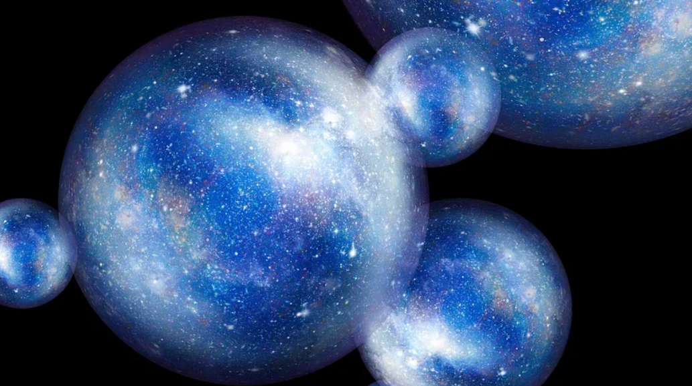

calendar_clock Abril 19, 2023 ás 08:50
 A Seleção Natural Cosmológica é uma hipótese científica formulada pelo físico Lee Smolin para tentar
explicar a complexidade do universo. Uma tentativa de solucionar um dos maiores mistérios da existência.
Se as leis e constantes físicas fossem um pouco diferente do que realmente são, a formação da vida seria
impossível. Ou seja, se a relação de elétrons para prótons, a taxa de expansão do universo, as massas
relativas das partículas elementares ou o valor de várias “forças físicas” não fossem extremamente
próximas do que são, as estrelas e moléculas complexas que levam à vida nunca poderiam ter se
desenvolvido. Muitos chamam essa extraordinária configuração de “ajuste fino”. O problema é, por que
nosso universo apresenta esse configuração precisamente afinada para permitir a vida?
Como a seleção natural de Charles Darwin foi o conceito mais poderoso para explicar a complexidade
biológica, Smolin explorou em seu livro A Vida do Cosmos, uma extensão desse conceito para todo o
universo, propondo que por efeitos quânticos nos buracos negros (estrelas colapsadas por sua própria
gravidade, objetos extremamente densos que distorcem o tecido espaço-temporal fazendo com que nem mesmo
a luz consiga escapar de sua influencia gravitacional) novas regiões do espaço possam surgir, formando
universos bebês separados de seu universo de origem.
Nas palavras de Lawrence Rifkin:
❝As condições extremas dentro de um buraco negro resultam em pequenas variações aleatórias das
forças e
parâmetros físicos do novo universo. Assim, cada universo bebê possui pequenas diferenças em relação
ao
universo pai. Devidas às características herdadas, universos com parâmetros mais amigáveis produzirá
mais estrelas que um universo hostil. Os parâmetros que vemos hoje são do jeito que são, porque,
depois
de acumular pouco a pouco parâmetros de gerações de universos anteriores, o resultado é um universo
“bom” para a produção de estrelas e vida como conhecemos.❞ (RIFKIN, 2014)[1]
Estrelas são pré-requisito para a vida, pois, a radiação é a fonte última da vida. Sem a luz solar, não
haveria vida na Terra. A luz solar não é apenas nosso meio de contato com o mundo; em um sentido muito
real, é a base de nossa existência. Se a diferença entre nós e a matéria inerte é a organização, é a luz
do Sol que dá a vida, o ímpeto para que a matéria se auto-organize e se transforme em vida, em toda a
escala, da célula individual até a vida. Além de ser também o fabricante da maior parte dos elementos
existente, já que é através dos processos termonucleares que ocorrem nas estrelas que elementos químicos
mais pesados que o hélio surgem.
❝A primeira coisa para vida é a variedade de átomos que possam se combinar para formar um número
muito
grande de moléculas de tamanhos, formas e propriedades químicas diferentes. […] Um universo contendo
apenas um tipo de átomo seria quase certamente que morto. […] o universo deve conter estrelas. […]
Não é
uma coincidência que, quando olhamos para cima, vejamos estrelas, do mesmo modo que não é
coincidência
que, quando olhamos ao nosso redor, vejamos plantas e arvores. Da mesma forma como as plantas
produzem o
oxigênio que respiramos, são as estrelas que produzem todos os elementos químicos que nós, e as
plantas,
somos feitos.❞ (SMOLIN, 2004, p.35)[2]
Em síntese a hipótese de Smolin sugere que os buracos negros podem “dar à luz” a novas regiões do
espaço-tempo cujas leis sofrem uma sutil “mutação” no processo. A singularidade inicial de nosso big
bang é assim explicada em termos de um “salto” quântico de um universo anterior. O argumento relativo às
leis, entretanto, é essencialmente darwiniano: aqueles universos com leis condizentes à geração de
buracos negros (estrelas em seu estágio final) terão muitas progênies enquanto aqueles com leis
dramaticamente diferentes não. A sucessão de universos pai e seus descendentes necessariamente se
desdobra no tempo, implicando que as leis evoluem e se modificam.